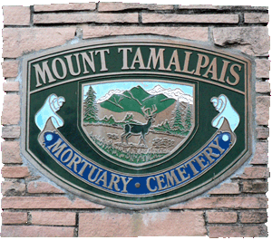

|

|
Mount Tamalpais Mortuary Cemetery
San Rafael, Marin County, California
Alfred W. Taliaferro, M.D.
Alfred W. Taliaferro M.D.
A Native of Virginia
Died at San Rafael
Dec. 9, 1885
He rests from his labors
and his works do follow him.
Alfred W. Taliaferro, M.D., Whig/Democratic, served in the California State Legislature in the 1850s first in the State Assembly (representing the 19th District), later in the State Senate (representing 11th District). He was Marin County’s first and most beloved physician. He was one of first Europeans to settle in the Fairfax area west of San Rafael. The area now called Fairfax was originally part of the Mexican Land Grant, Canada de Herrera, consisting of 6,658 acres, conferred to Domingo Sais on August 10, 1839, in return for his military service under the government of Mexico. Dr. Alfred W. Taliaferro was given a park-like glen by Domingo Sais. A fellow Virginian, Charles S. Fairfax, also fell in love with the property when he paid the good doctor a visit. Taliaferro transferred the property to Fairfax and in 1855 Fairfax and his wife, Ada, made it their home.
In the list of University of Pennsylvania Medical Students, 1845, the name Alfred W. Taliaferro from Gloucester, Virginia appears. Incidently, the name Taliaferro is often pronounced Toliver.
|
{kind=link}
{kind=link}
{kind=link}